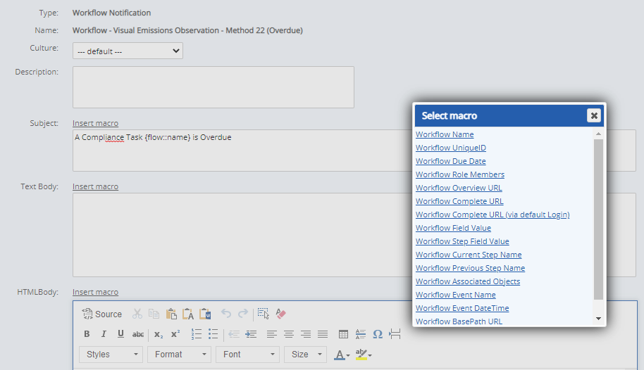
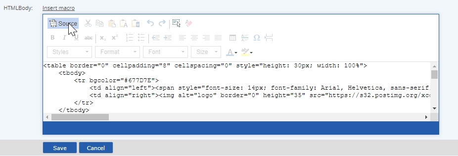

The notifications for workflow-based apps are defined through Workflow Policies that are associated with the definition workflows that underlie the app. The policy specifies the users who will receive the notification and under what conditions. The associated Workflow Notification Template defines the content of the email message that is sent.
To edit the content of an existing email notification, you must first determine the policy and then its associated notification template. You must have access to the Advanced Calculations (EMS) to view and edit Notification Templates.
Notifications that contain links to Portal task forms are Task Notification Templates associated with a Task Template, used for tasks without workflow associations.
To view Notification Templates:
From the menu, select Setup.
Under Templates, select Notification.
Existing Notification Templates are displayed. Use the Search pane to search for a Notification Template by name. The Notification Templates used for Apps will generally use the same 3-letter prefix as the other App components.
To edit a Notification Template:
In Notification Templates Manager, right click the template and select Edit.
You may edit the Subject line as well as the body of the message. Macros may be used in both the subject and the body content.
For the message body, you can define an alternate content for plain text email, as well as an HTML format.
Click Insert Macro to use specific workflow data in the message. See the table below for macro definitions.

In order to format a link with link text rather than the generated string, you will need to use the Source editor.
For the HTML message body, click Source to format the message in a text editor using HTML code.

When you are done editing, click Save and Confirm to save the template.
Change will apply to all notifications generated in the future where the associated policy applies.
The available macros are defined in the following table.
|
Macro |
Syntax |
Output | Comments |
| Workflow Notification | |||
|
Workflow Name |
{flow::name} |
Inserts name of workflow instance. | |
|
Workflow UniqueID |
{flow::unique id} |
Inserts unique ID of workflow in system. | |
|
Workflow Due Date |
{flow::due date} |
Inserts due date for workflow. | |
|
Workflow Role Members |
{role::[role name]} |
Inserts names of users or groups associated with named role. Substitute name of role in macro (spaces allowed). Do not include square brackets. Role name must be valid for the workflow type. | |
|
Workflow Overview URL |
{url::overview} |
Inserts link to Workflow Overview. To use link text in place of the full url, go to HTML view and insert: <a href="{url::overview}">link text</a> | |
|
Workflow Complete URL |
{url::complete} |
Inserts link to current step completion page. To use link text in place of the full url, go to HTML view and insert: <a href="{url::complete}">link text</a> | When using this macro in the systems that don’t utilize SSO, you will be directed to the default login page and asked for the credentials. When using this macro in the systems that utilize SSO and custom login page, you will be directed to the custom login page. Please contact your sales representative for more information on the custom login page configuration. |
| Workflow Complete URL (via default Login) | {url::completeViaDefaultLogin} | Inserts link to current step completion page. To use link text in place of the full url, go to HTML view and insert: <a href="{url::completeViaDefaultLogin">link text</a> | When using this macro, you will be directed to the default login page. |
|
Workflow Field Value |
{field::[field name]} |
Inserts current value of named field (in currently active step). Field must be present in the workflow form. Insert name of field in macro (exactly as named, with spaces allowed). Do not include square brackets. Field name must be valid for the workflow type. | |
|
Workflow Step Field Value |
{field::[step name]/[field name]} |
Inserts current value of named field in latest occurrence of the specified step. Insert step name and field name in macro (exactly as named; spaces allowed.) Do not include square brackets. Step name and field name must be valid for the workflow type. | |
|
Workflow Current Step Name |
{step::name} |
Inserts name of currently active step in workflow. | |
|
Workflow Previous Step Name |
{priorstep::name} |
Inserts name of previous step in workflow. | |
|
Workflow Associated Objects |
{flow::object} |
Inserts name of parent object associated with workflow. | |
|
Workflow Event Name |
{flow::event type} |
Inserts name of the workflow event that triggered the notification (i.e., Assignment, Completion, Past Due, etc.) | |
|
Workflow Event DateTime |
{flow::event date} |
Inserts date of the workflow event that triggered the notification | |
| Workflow BasePath URL | {url::basePath} |
Base url is used to create deep links to system components, including EMS Apps. The macro resolves to the following string: https://go.enviance.com/goto/SystemID/ | |
| Task Complete URL | {task::complete url} | Inserts link to associated task completion page. | |
| Task Notification | |||
| Task Name | {task::name} | Inserts name of task. | |
| Task ID | {task::id} | Inserts task unique ID. | |
| Task Due Date | {task::due date} | Inserts task due date | |
| Task Due Date Param | {task::due date param} | Inserts task due date, url encoded (required when building a URL). Use this version when providing a link to the Task Completion App. | |
| Task Assignor | {task::assignor} | Inserts name of Task Assignor. | |
| Task Assignees | {task::assignees} | Inserts names of Task Assignees | |
| Task Complete URL | {url::complete} |
Inserts link to task completion page. To use link text in place of the full url, go to HTML view and insert: <a href="{url::complete}">link text</a> | |
| Task View URL | {url::view} |
Inserts link to Task View page. To use link text in place of the full url, go to HTML view and insert: <a href="{url::view}">link text</a> | |
| Task Overall Completion Status | {task::completion status} | Inserts overall completion percentage for task. | |
| Task Description | {task::description} | Inserts task description. | |
| Task Comments | {task::comments} | Inserts task comments. | |
| Task Notification Comments | {task::notification comments} | Inserts task notification comments. | |
| Task Total Cost to Complete | {task::total cost} | Inserts value of Total Cost to Complete field for task. | |
| Task Total Time to Complete | {task::total time} | Inserts value of Total Time to Complete field for task. | |
| Task Associated Objects | {task::objects} | Inserts names of associated objects. | |
| Recipient Email | {recipient::email} | Inserts email address for all recipients. | |
| Task BasePath URL | {url:basePath} |
Base url is used to create deep links to system components, including EMS Apps. The macro resolves to the following string: https://go.enviance.com/goto/SystemID/ | |
| Workflow Complete URL | {workflow::complete url} |
Inserts link to associated workflow current step completion page in the Management System. In the forms accessed from Portal panels, the task fields and workflow fields will be displayed together in the same form for task-triggered workflows. | |